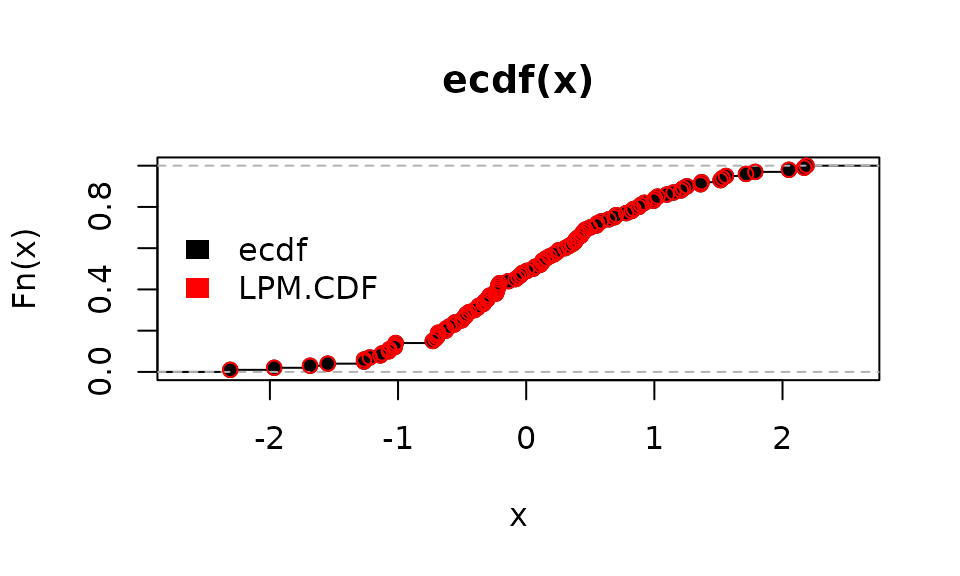
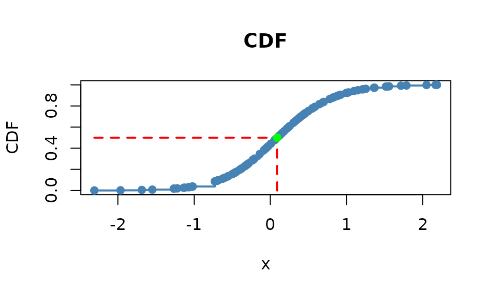
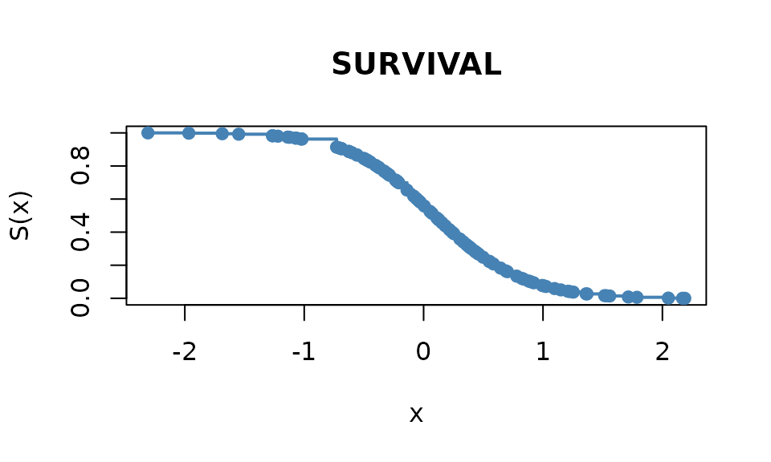

Getting Started with NNS: Partial Moments
Fred Viole
Source:vignettes/NNSvignette_02_Partial_Moments.Rmd
NNSvignette_02_Partial_Moments.RmdPartial Moments
Why is it necessary to parse the variance with partial moments? The additional information generated from partial moments permits a level of analysis simply not possible with traditional summary statistics.
Below are some basic equivalences demonstrating partial moments role as the elements of variance.
Variance
# Sample Variance (base R):
var(x)## [1] 0.8332328## [1] 0.8332328## [1] 0.8249005## [1] 0.8249005
# Variance is also the co-variance of itself:
(Co.LPM(1, x, x, mean(x), mean(x)) + Co.UPM(1, x, x, mean(x), mean(x)) - D.LPM(1, 1, x, x, mean(x), mean(x)) - D.UPM(1, 1, x, x, mean(x), mean(x)))## [1] 0.8249005First 4 Moments
The first 4 moments are returned with the function
NNS.moments. For sample statistics, set
population = FALSE.
NNS.moments(x)## $mean
## [1] 0.09040591
##
## $variance
## [1] 0.8249005
##
## $skewness
## [1] 0.06049948
##
## $kurtosis
## [1] -0.161053
NNS.moments(x, population = FALSE)## $mean
## [1] 0.09040591
##
## $variance
## [1] 0.8332328
##
## $skewness
## [1] 0.06235774
##
## $kurtosis
## [1] -0.1069186Statistical Mode of a Continuous Distribution
NNS.mode offers support for discrete valued
distributions as well as recognizing multiple modes.
# Continuous
NNS.mode(x)## [1] -0.4132834## [1] 2 3 4Covariance
cov(x, y)## [1] -0.04372107
(Co.LPM(1, x, y, mean(x), mean(y)) + Co.UPM(1, x, y, mean(x), mean(y)) - D.LPM(1, 1, x, y, mean(x), mean(y)) - D.UPM(1, 1, x, y, mean(x), mean(y))) * (length(x) / (length(x) - 1))## [1] -0.04372107Covariance Elements and Covariance Matrix
The covariance matrix is equal to the sum of the co-partial moments matrices less the divergent partial moments matrices.
cov.mtx = PM.matrix(LPM_degree = 1, UPM_degree = 1, target = 'mean', variable = cbind(x, y), pop_adj = TRUE)
cov.mtx## $cupm
## x y
## x 0.4299250 0.1033601
## y 0.1033601 0.5411626
##
## $dupm
## x y
## x 0.0000000 0.1469182
## y 0.1560924 0.0000000
##
## $dlpm
## x y
## x 0.0000000 0.1560924
## y 0.1469182 0.0000000
##
## $clpm
## x y
## x 0.4033078 0.1559295
## y 0.1559295 0.3939005
##
## $cov.matrix
## x y
## x 0.83323283 -0.04372107
## y -0.04372107 0.93506310
# Reassembled Covariance Matrix
cov.mtx$clpm + cov.mtx$cupm - cov.mtx$dlpm - cov.mtx$dupm## x y
## x 0.83323283 -0.04372107
## y -0.04372107 0.93506310## x y
## x 0.83323283 -0.04372107
## y -0.04372107 0.93506310Pearson Correlation
cor(x, y)## [1] -0.04953215
cov.xy = (Co.LPM(1, x, y, mean(x), mean(y)) + Co.UPM(1, x, y, mean(x), mean(y)) - D.LPM(1, 1, x, y, mean(x), mean(y)) - D.UPM(1, 1, x, y, mean(x), mean(y))) * (length(x) / (length(x) - 1))
sd.x = ((UPM(2, mean(x), x) + LPM(2, mean(x), x)) * (length(x) / (length(x) - 1))) ^ .5
sd.y = ((UPM(2, mean(y), y) + LPM(2, mean(y) , y)) * (length(y) / (length(y) - 1))) ^ .5
cov.xy / (sd.x * sd.y)## [1] -0.04953215CDFs (Discrete and Continuous)
P = ecdf(x)
P(0) ; P(1)
LPM(0, 0, x) ; LPM(0, 1, x)
# Vectorized targets:
LPM(0, c(0, 1), x)
plot(ecdf(x))
points(sort(x), LPM(0, sort(x), x), col = "red")
legend("left", legend = c("ecdf", "LPM.CDF"), fill = c("black", "red"), border = NA, bty = "n")
# Joint CDF:
Co.LPM(0, x, y, 0, 0)
# Vectorized targets:
Co.LPM(0, x, y, c(0, 1), c(0, 1))
# Copula
# Transform x and y so that they are uniform
u_x = LPM.ratio(0, x, x)
u_y = LPM.ratio(0, y, y)
# Value of copula at c(.5, .5)
Co.LPM(0, u_x, u_y, .5, .5)
# Continuous CDF:
NNS.CDF(x, 1)
# CDF with target:
NNS.CDF(x, 1, target = mean(x))
# Survival Function:
NNS.CDF(x, 1, type = "survival")